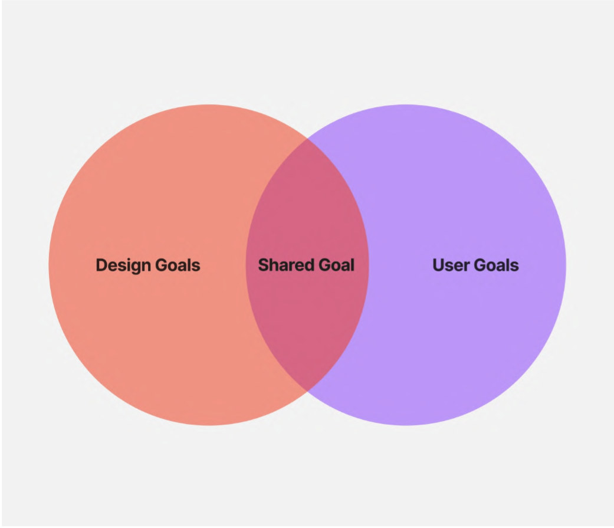

Reflecting on the Evolution of Web Design
Week 3
Today's lecture provided perspectives on web design progression from 1998 to 2008. It covered developments like responsive design, social media, CMS systems, and the smartphone revolution. Understanding Web 2.0 architecture was informative. Enabling user-generated content transformed the web into what it is today. Wikipedia, YouTube, and iPhone normalised mobile internet access. The accessibility discussion was highly relevant. Designers have an ethical obligation to create inclusive online experiences. The connection between WCAG standards and digital legislation worldwide highlighted the legal importance of accessibility. The lecture covered how web design aligns with business goals. User experience is key for customer acquisition and revenue growth. Setting SMART objectives allows optimizing qualitative aspects like brand image and quantitative metrics like conversion rates. The Venn diagram workshop provided practical experience identifying common ground between user and business needs. Role-playing personas enabled perspective-taking. Overall, the lecture covered how effective web design requires holistic thinking across accessibility, user-centricity, business alignment, and historical awareness. It provided useful insights to inform an effective design approach. While the web landscape continues evolving, human-centered principles remain vital.
